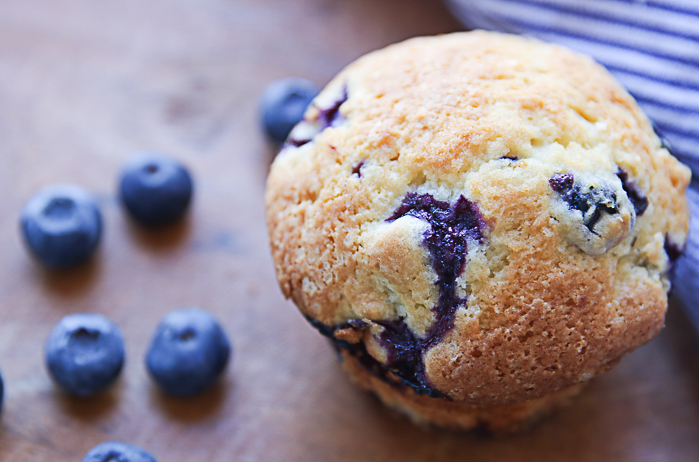

Blueberry Muffin

Description
These blueberry muffins are the best and they come out perfectly every time I bake them. You can use fresh blueberries or frozen – substitute cranberries and orange zest for the holiday season or stick with the classic blueberry and lemon that I love. Don’t have lemon? Try orange or lime zest. You can’t go wrong here.
Ingredients
- ½ Cup butter, softened
- 1¼ cups sugar
- 2 eggs
- 1 teaspoon pure vanilla extract
- 2 cups + 1 tablespoon flour
- ½ teaspoon salt
- 2 teaspoons baking powder
- ½ cup milk
- 2 cups blueberries (frozen or fresh)
- zest of one lemon
- raw sugar (optional)
Directions
- Preheat oven to 375 degrees.
- Cream the butter and sugar in a mixing bowl until light and fluffy.
- Add vanilla and one egg at a time, mixing between each addition.
- In a separate bowl, sift the flour, baking powder and salt.
- Alternate the dry ingredients with the milk into the butter mixture, mixing on low until completely incorporated. Careful not to overmix the batter.
- Place berries in your dry ingredients bowl.
- Add 1 tablespoon flour to the berries, gently shaking the bowl to evenly coat without crushing the fruit.
- Add berries to batter along with the zest of a lemon and gently fold in.
- Fill your lined or greased muffin tin with batter and bake for about 30-35 minutes.